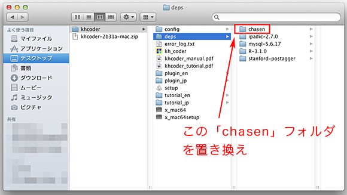
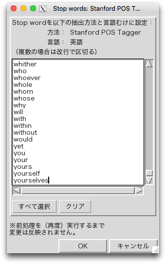
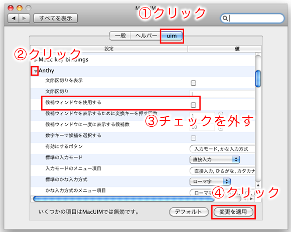
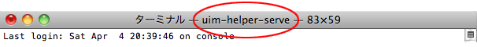

Mac OS X用の自動設定ソフトウェア を使用しても、KH Coderが上手く動かないときには、まず事前の準備 や設定 を記載どおりの手順で行なったかを振り返ってください。特にXquartzのインストールが正常に完了しているかどうかを再度確認してください。正常に完了していれば、Finderで「アプリケーション」「ユーティリティ」の中にある「Xquartz」をダブルクリックすると、「xterm」というタイトルの画面が開きます。この画面がちゃんと開くか確認し、もしも開かない場合はXquartzのインストールを再度行なってください。
その上で、本ページに掲載の他の項目で、該当するものがないかどうかご覧ください。
それでも上手くいかない場合には、どのような問題が生じているかをなるべく詳しく、メール または掲示板 でご連絡いただけますと幸いです。その際には、ターミナルの表示内容をすべて貼り付けてお知らせください。
なお、自動設定ソフトウェアとは直接的に関係がないご質問、すなわちKH Coderが起動したあとのKH Coderについての一般的なご質問につきましては、メールではなく掲示板をご利用ください。
この自動設定ソフトウェアは「買い切り」のものとお考えください。新しいバージョンを利用したい場合には、新しいバージョンの自動設定ソフトウェアをお買い求めいただく形となります。
「前処理の実行」時に「茶筌の起動に失敗しました」というエラーが出る場合には、まずはチュートリアルとして添付されている漱石「こころ」データでも同じエラーが出るかどうかをご確認ください。すなわち、KH Coderのメニューから「プロジェクト」「新規」と進み、「tutorial_jp」フォルダ内の「kokoro2.txt」を選択してください。そして前処理の実行や、抽出語リストの作成を行なってみてください。
■チュートリアルの「こころ」データであれば上手くいく場合
チュートリアルデータであれば上手くいく場合、エラーが出る原因は、データ準備の仕方にありそうです。
データは「テキストエディット」で入力し（あるいはテキストエディットに貼り付けて）、メニューの「フォーマット」「標準テキストにする」をクリックしてから保存すると良いでしょう。また保存時には「標準テキストのエンコーディング」を「日本語（Shift JIS）」とすると確実でしょう。
またファイル名に日本語文字や半角スペースを含めないようご注意ください。ファイルを置くフォルダの名前についても同様です。（特にフォルダ名の問題で上手くいかない場合には）チュートリアルのデータ「kokoro2.txt」と同じ場所に自分のファイルを保存して試してみると良いでしょう。
■チュートリアルの「こころ」データでも上手くいかない場合
この場合は、以下の手順をお試しください。
「khcoder」フォルダを、フォルダごと「ユーザ」フォルダ内に移動します。
移動した「khcoder」フォルダ内の「setup」をダブルクリックします。
移動した「khcoder」フォルダ内の「kh_coder」をダブルクリックして、KH Coderを起動します。
メニューから「プロジェクト」「開く」をクリックし、開いた画面で、既に登録しているプロジェクトをすべて削除します。
「tutorial_jp」フォルダ内の「kokoro2.txt」を再度プロジェクトとして登録し、前処理を実行してみてください。
この手順で「kokoro2.txt」の前処理を行えるようでしたら、上の「『こころ』データであれば上手くいく場合」にお進みください。
■茶筌の更新が必要な場合
チュートリアルデータでもエラーが出る場合には、以下の手順で茶筌を更新する必要があるかもしれません。特に、2014年10月28日以前に自動設定ソフトウェアを購入され、なおかつMac OS X 10.6または10.7をお使いの場合、以下の手順で問題が解決する可能性があります。
「chasen.zip 」をダウンロードしてください。
ダウンロードした「chasen.zip」をダブルクリック（展開）すると、「chasen」というフォルダが出てきます。
この「chasen」フォルダを、「kh_coder」と同じ場所にある「deps」とい
うフォルダの中にコピー（ドラッグ＆ドロップ）してください。「置き換える
」かどうかを聞かれますので、「置き換える」を選択してください。

■それでも上手くいかない場合
Mac OS Xのバージョンや、ターミナルの表示内容、「kh_coder」と同じ場所に生成されている「error_log.txt」ファイルの内容などを添えて、
掲示板
でご連絡ください。
メニューの「前処理の実行」をクリックすると、本来であれば、「この処理には時間がかかる場合があります。続行してよろしいですか」という問い合わせ画面が出ます。
しかし、Macbookに外部モニターをつないだりといった形で、複数のモニターを使用している場合、この画面が出ずにKH Coderが固まってしまうことがあるようです。
この際にはご不便をおかけして恐縮ですが、2台目のモニターを取り外して、使用モニターを1つにした上で前処理を行なうと上手くいくようです。
少し分かりにくくて恐縮なのですが、PNG形式で保存したいときには、ファイル名を入力する際に最後の「.png」まで入力するようにしてください。たとえば、「filename」だけで止めずに、「filename.png」と入力してから「Save」をクリックして下さい。
同様にRコマンド形式で保存するときには「filename.r」のように入力して「Save」をクリックしてください。
Mac OS X版のKH Coderでは、通常のMacアプリのようには日本語を入力できません。入力欄で「Shift」キーを押しながら「Space」キーを押すことで、日本語入力モードになります。（MacUIM + Anthyによる日本語入力となります）
全角英数字を入力したいときには「Shift + F9」を、ひらがなに戻すには「Shift + F6」を押してください。
なお、「Shift」キーを押しながら「Space」キーを押しても、どうしても日本語を入力できない場合には、まずテキストエディットに日本語を入力し、それをコピーして、KH Coderに貼り付けることができます。KH Coderに貼り付けるには、「Ctrl」キーを押しながら「v」キーを押して下さい。「Ctrl」キーを使う点にご注意下さい。
KH Coderに文字などを貼り付ける時には、キーボードの「Ctrl」キーを押しながら「V」キーを押して下さい。「Ctrl」キーを使う点にご注意下さい。

たとえばstop wordsを設定するときなど、データを貼り付けたい場合は多くあると思います。「Ctrl」キーを使えば貼り付けられます。KH Coder上でコピーしたいときにも「Ctrl」キーを押しながら「C」キーを押すか、あるいは「コピー」という画面上のボタンを押してください。
Mac OS X 10.6ではこの問題が生じる場合があるようです。この問題が生じた場合には、以下の手順で解決できます。
「システム環境設定」を開き、一番下の「その他」の箇所にある「MacUIM」をクリックします。
MacUIMの設定画面が開いたら、(1)「uim」をクリックして、(2)「Anthy」のところにある右向きの三角形をクリックします。
そして(3)「候補ウィンドウを使用する」のチェックを外して、(4)「変更を適用」をクリックします。
Macを再起動します。

「Alzip」のような、Macにもとからついていたのではない、別途のZip解凍ソフトをインストールしていると、この問題が生じる場合があるようです。
この場合には一時的に、Macにもとからついていた「アーカイブユーティリティ」でZipファイル（*.zip）を開くようにMacの設定を行なってください。言葉をかえると、*.zipという拡張子に関連付けられているアプリケーションを、「Alzip」等から「アーカイブユーティリティ」に変更する必要があります。この手順についてはこちらのページ が分かりやすいと思います。
この設定を行なってから、再度ダウンロード・解凍・インストールを行なってみてください。
「setup」や「kh_coder」をダブルクリックした際に、「開発元が未確認のため開けません」というエラーが出る場合があります。この場合はダブルクリックではなく、右クリックしてから「開く」をクリックしてください。
こちらのページ をご参照ください。
まれに、ターミナル画面に次のようなエラーが表示されて、KH Coderが起動しない場合があります。
Can't load 'auto/Tk/Tk.bundle' for module Tk: dlopen(auto/Tk/Tk.bundle, 1): image not found at /</Users/K/Desktop/khcoder/kh_coder>DynaLoader.pm line 223, <DATA> line 855.
この場合には、事前の準備 について今一度ご確認の上、以下の手順をお試しください。
■ 「x_mac64」ファイルの置き換え
「x_mac64_1.zip 」をダウンロードして下さい。
ダウンロードしたファイルをダブルクリックして展開すると、「x_mac64」というファイルが出てきます。※Safariでダウンロードすると、自動的に展開されていることがあります。
こ
の「x_mac64」を、「khcoder」フォルダにドラッグ＆ドロップします。
「置き換えますか？」と聞かれますので、「置き換え」をクリックして
下さい。
「kh_coder」をダブルクリックします。
これでも起動しなかった場合には、ターミナルの表示内容をすべてお知らせい
ただけますと幸いです。

ターミナル上部のタイトルバーに「uim-helper-serve」と表示された状態で止ってしまい、KH Coderが起動しない場合があるようです。
これはKH Coder上（X11上）で日本語入力を行なうためのソフトウェア「MacUIM」が、上手く起動せず、止ってしまった時に生じる現象です。最新版のMacUIM（MacUIM-0.6.16-1.dmg）ではなく、1つ前のバージョンのMacUIM（MacUIM-0.6.15-2.dmg）をインストールすることで、問題が解決する場合があるとのことです。そのための手順は以下のようになります。
■最新版MacUIMをアンインストール
Finderで「アプリケーション」「ユーティリティ
」とたどり、その中の「ターミナル」をダブルクリックしてターミナルを開きます。すでにターミナルを開いている場合も、いったん閉じて、Finderから開きます。
以下の行を1行ずつ、ターミナルに貼り付けてキーボードの「Return」キーを押します。「password:」という表示が出たら、ログイン・パスワードを入力して「Return」キーを押します。
sudo rm -rf /Library/Frameworks/UIM.framework
ここまで来たら、いったんMacを再起動して、KH Coderが起動するかどうかをお試しください。起動するようなら、KH Coderをこの状態でお使いいただくことも可能です。ただし、日本語についてはいったんテキストエディットで入力したものをKH Coderへ貼り付ける（Ctrl + V）形になります。KH Coderに直接日本語を入力するためにはMacUIMが必要なので、下記の手順で1つ前のバージョンのMacUIMをインストールしてみるとよいでしょう。
■1つ前のバージョンのMacUIMをインストール
MacUIMのダウンロードサイト から、「MacUIM-0.6.15-2.dmg」をダウンロードしてインストールします。
1つ前のバージョンのMacUIMをインストールすると再びKH Coderが起動しなくなった場合には、残念ですが再度MacUIMのアンインストールを行なってください。この場合、お使いのMac環境ではKH Coderに直接日本語を入力することはできません。いったんテキストエディットで入力した日本語をKH Coderへ貼り付ける（Ctrl + V）形でご利用ください。
2015年4月22日以前に自動設定ソフトウェアを購入された場合、まれに、ターミナル画面に次のようなエラーが表示されて、KH Coderが起動しないことがあります。
export: Command not found.
この場合には以下の手順をお試しください。
「kh_coder.app.zip 」をダウンロードしてください。
ダウンロードしたZipファイルをダブルクリックして展開すると、「kh_coder」または「kh_coder.app」が出てきます。※Safariでダウンロードすると、自動的に展開されていることがあります。
この「kh_coder」または「kh_coder.app」を、「khcoder」フォルダにドラッグ＆ドロップします。
「置き換えますか？」と聞かれますので、「置き換え」をクリックして
下さい。
「kh_coder」をダブルクリックします。
これでも起動しなかった場合には、ターミナルの表示内容をすべてお知らせい
ただけますと幸いです。


{kind=link}
{kind=link}